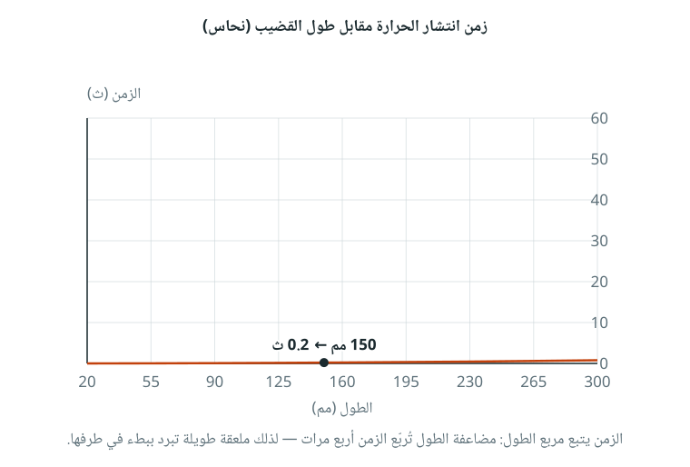

الملعقة المعدنية والملعقة البلاستيكية: أيهما تنقل الحرارة أسرع؟
اختر المادة والطول، واحسب زمن انتشار الحرارة. محاكاة تعليمية لا قياس فيزيائي حقيقي.
محاكاة تعليمية لا قياس فيزيائي حقيقي: الأرقام تُحسب من النموذج لحظيًا، ولا تُقاس بأدوات منزلية.
افتراضات النموذج والمصدر
t ≈ L²/α حيث α = k/(ρ·c)
قضيب معزول جانبيًا
حالة شبه مستقرة
الزبدة مهملة الكتلة
Thermal diffusivity — definition and typical values — Wikipedia
Thermal conductivity of common metals — The Engineering ToolBox
ضع قطعة زبدة صغيرة على المسافة نفسها من طرف ملعقة معدنية وملعقة بلاستيكية، واغمر الطرفين في ماء ساخن من الصنبور. سجّل الزمن حتى تسقط الزبدة. الفرق لا يعود إلى «الملعقة أسخن»، بل إلى سرعة نقل الحرارة داخل المادة.
التوصيل الحراري يتبع قانون فورييه: تدفق الحرارة يتناسب مع الموصلية ومع فرق الحرارة على الطول. ولأن الحرارة تحتاج زمنًا لتنتشر مسافة معلومة، فإن هذا الزمن يقارب مربع الطول مقسومًا على الانتشارية الحرارية (k/ρc). مضاعفة الطول تعني أربعة أضعاف الزمن تقريبًا.
ما لا يُقاس منزليًا: الموصلية بوحدة W/(m·K). قياسها يحتاج تحكمًا في القدرة والمساحة وثبات الحالة — والتجربة المنزلية تعطي مقارنة نسبية لا معاملًا.
كيف تعمل الظاهرة؟
ذرّات المعدن مرتبطة بإلكترونات حرة تنقل الطاقة بسرعة بين الأيونات، فالحرارة تنتقل داخل المعدن أسرع بكثير من البلاستيك الذي ينقلها باهتزاز الجزيئات المتشابكة وحده.
العلاقة بالأرقام
النحاس k=401 W/(m·K) و α=1.17×10⁻⁴ م²/ث. قضيب 150 مم يحتاج تقديريًا t ≈ L²/α = (0.15)²/1.17×10⁻⁴ = 0.2 ث. الفولاذ k=50 و α=4.5×10⁻⁵ يحتاج 0 ث لنفس الطول.
مفاهيم متقاربة
يُخلط بين «الموصلية» و«الانتشارية»: الموصلية تقيس تدفق الحرارة تحت تدرّج معلوم، والانتشارية تقيس سرعة تغيّر الحرارة داخل المادة — وهي التي تحدد الزمن في هذه التجربة.
حدود التطبيق
النموذج يقارب قضيبًا طويلًا معزولًا جانبيًا بلا فقد، والزبدة لها كتلة وسعة حرارية تؤخر السقوط. النتيجة رتبة قدر للمقارنة، لا زمنًا متوقعًا بالثانية.

| الكمية | القيمة | المصدر |
|---|---|---|
| زمن الانتشار في نحاس 150 مم | 0.2 ث | [1] |
| الزمن نفسه في الفولاذ | 0 ث | [1] |
| موصلية النحاس | 401 W/(m·K) | [2] |
المصادر
- 1 Thermal diffusivity — definition and typical values — Wikipedia. en.wikipedia.org/wiki/Thermal_diffusivity · اطُّلع عليه 2026-11-19
- 2 Thermal conductivity of common metals — The Engineering ToolBox. www.engineeringtoolbox.com/thermal-conductivity-metals-d_858.html · اطُّلع عليه 2026-11-19
راجعه: عبدالله الهويدي — مراجعة في تطبيق انفراد · 2026-11-19 · آخر تحديث 2026-11-19
رجوع إلى المعمل